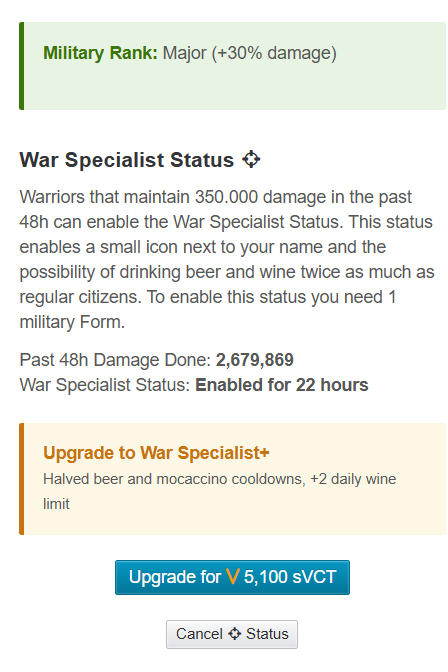
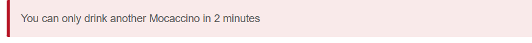
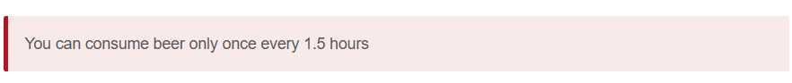
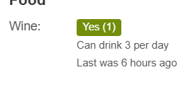

⚔️ New Update in My Profit Land – War Specialist Status Upgrade via SVCT

A new update has arrived in My Profit Land, bringing exciting improvements for war-focused players. The administration continues to refine and enhance the gameplay experience, and this latest addition is clearly aimed at making battles smoother, faster, and more strategic.
🛡️ War Specialist Status – What’s New?
Players can now upgrade their War Specialist Status using SVCT. The upgraded status lasts 24 hours and provides significant advantages during combat by reducing waiting times and increasing drink usage limits.
🔥 Key Benefits
-
Mocaccino Cooldown Reduced by 50%
Instead of waiting 5 minutes, you can now drink Mocha every 2.5 minutes. -
Beer Cooldown Reduced
Beer can now be consumed every 1 hour and 30 minutes. -
Up to 3 Wines Per Day
Increased daily Wine usage allows for greater flexibility during extended battles.



🎯 Why This Update Matters
War players have long faced extended cooldown periods between consumables, which often slowed down momentum during fights.
This update helps to:
- Reduce idle waiting time
- Improve combat flow
- Enhance player endurance during wars
- Encourage more dynamic battle strategies
🧠 A Step Forward in Game Development
The game administration has consistently worked on improving various aspects of My Profit Land, including combat systems, resource management, and overall gameplay balance.
This War Specialist upgrade reflects a continued effort to evolve the game and respond to the needs of competitive players.
📍 How to Activate the Upgrade
You can activate the new status through:
My Weapons and Infos
From there, use SVCT to upgrade your War Specialist Status.
⚖️ Final Thoughts
With reduced cooldowns and increased drink limits, warfare in My Profit Land is becoming faster and more dynamic.
Players who adapt quickly and use this feature strategically may gain a significant advantage in upcoming battles.
The battlefield just became faster.
Are you ready?